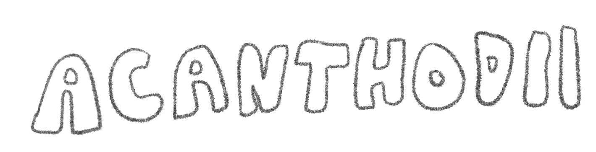
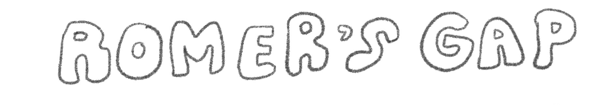

Agnatha is a class of early jawless fish, composed of what were likely the earliest vertebrates. Some fossils date back to the late Cambrian period. These fish did not have paired fins or a stomach. Their skeletons would have been composed of cartilage, Agnatha had paired gill pockets, and a pineal eye.

Acanthodii were the early jawed fishes, now exctinct, that existed during the Paleozoic era. They were coated in small scales and spined fins. Fossils of this class date back to the Silurian period.
Placodermi fish had plate-like skin, like armor. This armor was on the head and neck, leaving the rest of the body naked/covered in small scales. These fish did not have teeth, rather, bony plates.
This class of fish have skeletons composed of cartilage rather than bone. These fish had paired fins and scales, gill slits on each side of their body, and occasionally give birth to live young.
Holocephali is a small group of fishes, appearing first in the Jurassic period. At present, there are only a few living ancestors. These fish are cartaliginous and have opercular covering their gills.
Lobe finned fish are fish which have fleshy paired pectoral and pelvic fins that articulate with the pectoral and pelvic girdles through a single bone. These fish are believed to have evolved into early tetrapods. Lung-fish and coelacanth are living examples of this unique type of fish.

Actinopterygii are ray finned fish. These are the main type of aquatic vertebrates today, fitting into nearly every aquatic niche. Their fins have webs of skin supported by spines. They also mostly have complex bony skeletons.

A 20-million-year-long gap during the early Carboniferous period that very few vertebrate fossils came out of. Fossils can only form under special conditions, creating this large gap in archaeological history. This gap affected scientists’ knowledge of tetrapod evolution.
Tetrapods are any organism, alive or extinct, that evolved from the early tetrapod ancestors. These early tetrapods were considered to be any species that had four feet.
The Devonian period is a key point in evolution towards vertebrates, as this is when tetrapods began to develop and leave the seas. This was a period during the middle of the Paleoizoic era.